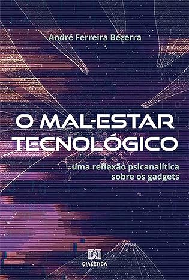
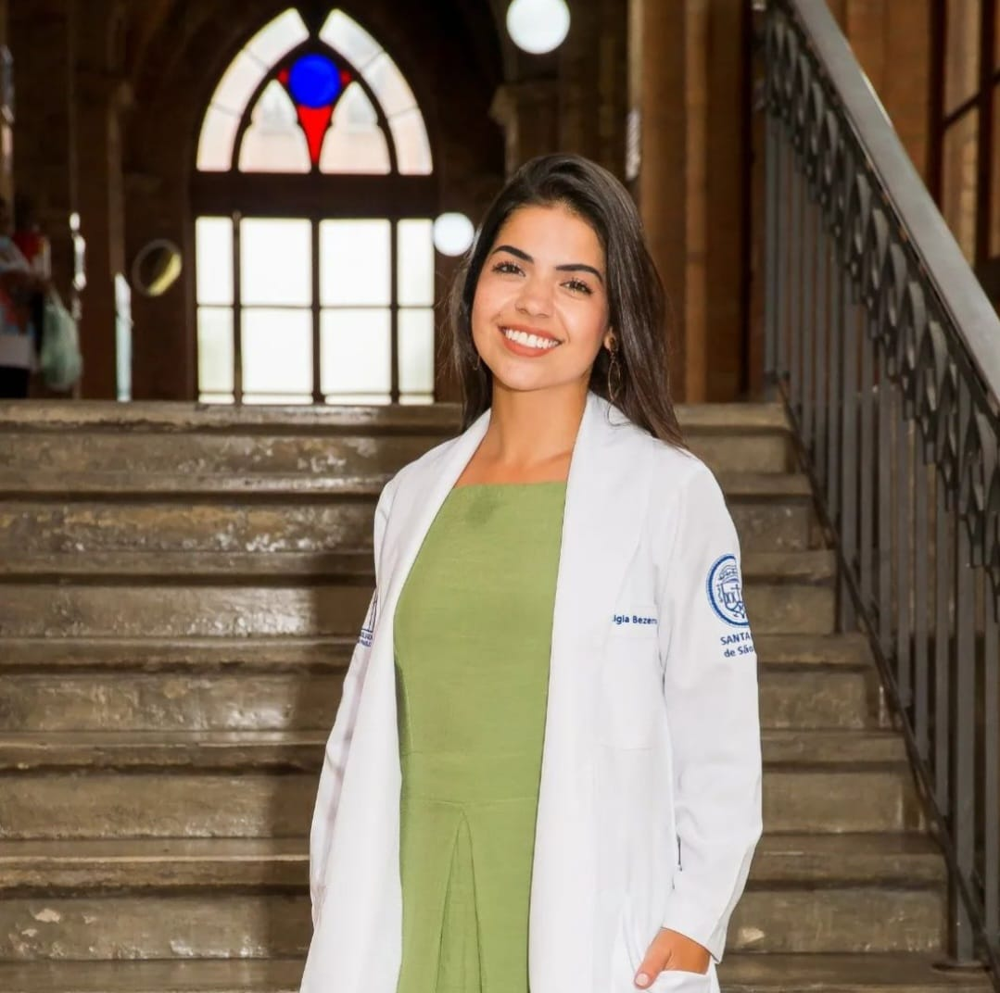

André Bezerra
Pesquisador nas áreas de Psicologia Social, Psicanálise, Semiótica e Tecnologia. Mestre e Doutorando em Psicologia Social pelo Instituto de Psicologia da Universidade de São Paulo (IPUSP). Especialista em Semiótica Psicanalítica pela Pontifícia Universidade Católica de São Paulo (PUC-SP). Faz parte da equipe do Núcleo de Estudos e Trabalhos Terapêuticos (NETT), grupo que desenvolve um trabalho junto a movimentos sociais oferecendo atendimento clínico para pessoas em situação de vulnerabilidade psíquica e social. Trabalha como acompanhante terapêutico, tendo experiência junto aos Centros de Atenção Psicossocial (CAPS), atende também como psicanalista em clínica particular. Foi membro do comitê gestor do Projeto de Apoio Psicológico Online (PAPO) do IPUSP. Participante da rede clínica e da rede de pesquisa sobre Psicanálise e Infância do Fórum do Campo Lacaniano de São Paulo (FCL-SP).
Atualmente cursando o Doutorado em Psicologia Social na Universidade de São Paulo (USP), com pesquisa focada em Psicanálise, Identificação, Traço, Saber e Algoritmos, sob a orientação do Prof. Paulo Antonio de Campos Beer. Anteriormente, obteve o Mestrado em Psicologia Social na USP em 2020, com uma dissertação sobre o mal-estar tecnológico e a reflexão psicanalítica sobre gadgets. Sua trajetória acadêmica inclui uma Especialização em Semiótica Psicanalítica na Pontifícia Universidade Católica de São Paulo (PUC/SP) em 2016, e a Graduação em Comunicação Social na Escola Superior de Propaganda e Marketing (ESPM) concluída em 2013.
Compre agora o livro: O Mal-Estar Tecnológico: uma reflexão psicanalítica sobre os gadgets

Ligia Bezerra

Ligia Bezerra é médica formada pela Faculdade de Medicina de Marília (FAMEMA) desde outubro de 2018. Sua trajetória profissional inclui experiências em diferentes áreas da medicina, desde pronto-socorro até coberturas especializadas em ginecologia e obstetrícia. Ao longo de sua carreira, participou ativamente de eventos científicos e cursos extracurriculares, demonstrando seu comprometimento com a atualização contínua e o aprimoramento profissional.
Ligia Bezerra, médica graduada pela FAMEMA com conceito 4 no ENADE/2016, destaca-se por uma trajetória pós-faculdade notável. Alcançou reconhecimento ao realizar uma residência de excelência em Ginecologia e Obstetrícia na Santa Casa de São Paulo, seguida por um fellowship em Uroginecologia na UNICAMP. Sua busca incessante por aprimoramento reflete-se em participações ativas em diversos congressos, abrangendo áreas como Oncologia, Saúde Mental, Cardiologia, Pneumologia e Radiologia. Atuou em diferentes unidades de saúde, desde o Pronto Socorro Municipal de Diadema até hospitais militares, colaborando diariamente com profissionais renomados no mercado. Ligia é reconhecida por sua versatilidade, dedicação à prática médica e compromisso com a excelência em sua especialidade.
Laura Bezerra
Laura Bezerra é uma talentosa profissional de Web Design e Desenvolvimento Front-End, com experiência significativa em projetos freelance e estágios em diversas organizações. Destacou-se na criação e desenvolvimento de sites, aprimorando suas habilidades com plataformas como Wix, Figma, Photoshop, Illustrator, HTML, CSS, JavaScript, Git e React. Participou ativamente na concepção de páginas, desde o design até a implementação, mostrando versatilidade e conhecimento técnico. Além disso, seu envolvimento em projetos de automação condominial e inovação tecnológica reflete sua capacidade de aprender e aplicar novos conhecimentos.
Está em formação na Zion Escola de Entretenimentos na área de Design de Games e Mídia Digital, evidenciando seu interesse em expandir suas habilidades para além do desenvolvimento web. Paralelamente, está cursando Engenharia Ambiental na UNESP, mostrando sua abordagem multidisciplinar e interesse em questões ambientais. Como Pesquisadora de Iniciação Científica na UNESP, contribuiu para a análise dos reflexos da pandemia COVID-19 na geração e gestão de resíduos domiciliares e de saúde. Seu amplo espectro de habilidades inclui o desenvolvimento front-end através de cursos na Origamid, consolidando uma base sólida em HTML, CSS e JavaScript. Laura também se destacou no CRIA Hub 2.0, conquistando a 3ª colocação com um projeto gamificado inovador chamado "Byron Money-Coach".
Suzette Ferreira
Suzette Ferreira é uma mãe dedicada e profissional comprometida, cujo foco principal é a saúde pública em suas diversas dimensões. Sua jornada pessoal é marcada pelo equilíbrio entre a maternidade e a excelência na área da nutrição, refletindo em seus filhos, Laura, Ligia e André, que também seguiram carreiras de destaque em suas respectivas áreas.
Suzette Ferreira possui uma vasta experiência na área de nutrição, consolidada ao longo de sua carreira em diversos setores da saúde pública. Seu trabalho na Vigilância Sanitária, onde realizou inspeções em estabelecimentos alimentícios, ambulantes e serviços de interesse à saúde, demonstra seu comprometimento com a segurança alimentar e a qualidade dos serviços de saúde. Na Atenção Básica, na Unidade Básica de Saúde Jardim Grimaldi da PMSP, Suzette ofereceu atendimento individual a grupos vulneráveis, conduziu grupos multidisciplinares, elaborou planos alimentares personalizados e promoveu a educação em saúde para grupos portadores de DCNT. Sua formação acadêmica inclui graduação em Nutrição pela Universidade São Camilo, especializações em Saúde do Trabalhador e Ecologia Humana pela FIOCRUZ, e Pós-Graduação em Saúde da Família pela FGF, evidenciando seu compromisso com a educação continuada. Suzette também se capacitou em diversas áreas, incluindo Vigilância em Saúde, Gerontologia, Atendimento Clínico Nutricional e Investigação de Surtos de Doenças de Transmissão Alimentar. Seu objetivo profissional está intrinsecamente ligado à promoção da saúde pública, e seu legado se reflete não apenas em sua carreira, mas também na trajetória profissional de seus filhos.
Contato